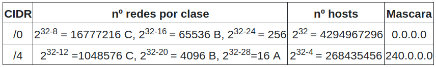
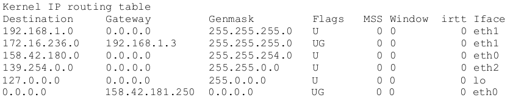
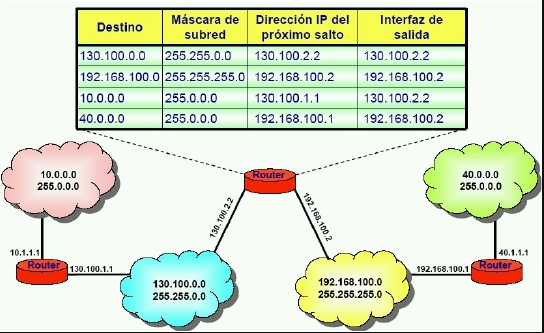
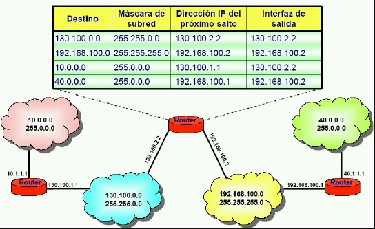

Direccionamiento IP#
El direccionamiento IP es la parte encargada de asignar de forma correcta a cada equipo una dirección IP, de forma que los equipos puedan comunicarse correctamente entre sí
Las direcciones IPV4 se expresan mediante un número binario de 32 bits permitiendo un espacio de direcciones de hasta 4.294.967.296 (232) direcciones posibles.
Se reservaron ciertos rangos de direcciones IP de las clases A, B y C para permitir su uso interno o privado en redes de área local (LAN) como por ejemplo las de una casa o una oficina.


Dirección red (Network) es aquella en la que todos los bits de la porción de host están a cero, se obtiene Dirección IP (Addres) and Máscara de red(Network), veamos el ejemplo con la siguiente IP de tipo B 128.192.244.240:
Address: 128.192.224.240 10000000.11000000.11100000. 11110000
Netmask: 255.255.255.0 = 24 11111111.11111111.11111111. 00000000
Network: 128.192.224.0/24 10000000.11000000.11100000. 00000000
HostMin: 128.192.224.1 10000000.11000000.11100000. 00000001
HostMax: 128.192.224.254 10000000.11000000.11100000. 11111110
La dirección de broadcast es aquella en la que todos los bits de la porción de host están a 1, los mensajes se dirigen a todas las computadoras en una red
Broadcast: 128.192.224.255 10000000.11000000.11100000. 11111111
Hosts/Net: 2^8-2 = 254 Class B
En la clase A, se asigna el primer octeto para identificar la red, reservando los tres últimos octetos (24 bits) para que sean asignados a los hosts, de modo que la cantidad máxima de hosts es 224 - 2 (se excluyen la dirección reservada para broadcast (últimos octetos a 1) y de red (últimos octetos a 0)), es decir, 16 777 214 host
10000000 = 128
11000000 = 192 = 128 + 64
11100000 = 224 = 128 + 64 + 32
11110000 = 240 = 128 + 64 + 32 + 16
11111000 = 248 = 128 + 64 + 32 + 16 + 8
11111100 = 252 = 128 + 64 + 32 + 16 + 8 + 4
11111110 = 254 = 128 + 64 + 32 + 16 + 8 + 4 + 2
11111111 = 255 = 128 + 64 + 32 + 16 + 8 + 4 + 2 + 1
Ahora podemos hacernos una pregunta simple ¿que parte de la dirección 165.57.57.89 es la red y qué la dirección de host? Para eso se crearon las máscaras de red. Una máscara de red no es más que un número binario de 32 bits que contiene unos «1» en todos los bits de la dirección que identifica a la red, y ceros «0» en las posiciones de la dirección que corresponden al host.
Las redes privadas son bastante comunes en esquemas de redes de área local (LAN) de oficinas, empresas y ámbito doméstico, debido a que no tienen la necesidad de usar direcciones IP públicas en sus dispositivos (PC, impresora, etcétera), compartiendo todos los dispositivos de la red privada la misma dirección pública, habitualmente la del módem del enrutador.
Las direcciones de Internet privadas son:

Esta última red de clase B queda reservada para equipos que tienen activa la configuración de la tarjeta de red automática (para que un servidor DHCP les responda y les ofrezca su configuración) y ningún servidor DHCP les responda (habitualmente este servidor está configurado en el enrutador), en ese caso estos equipos cogen aleatoriamente una ip de este rango de IP privadas para poder comunicarse con otros equipos de la red a los que tampoco les haya respondido el servidor DHCP.
El subnetting IP#
Tras la expansión en el uso del sistema de direccionamiento IP, surgió la necesidad de cosas como disponer de espacios de redes mayores de 256 para clase C o menores de 16.384 para clase B por ejemplo. Con el juego de los bits de máscara podemos definir redes IP diferentes a las clases estándares. Por ejemplo, sabemos que la red 172.17.0.0 es una red de tipo B y le corresponde de manera natural la máscara 255.255.0.0.
Por tanto si tengo por ejemplo la dirección de host 172.17.12.95 ya sabemos que es de clase B y que pertenece a la red 172.17.0.0 sin necesidad de especificar máscara ninguna. Y esto es así porque el 172 inicial de la dirección pertenece a la clase B.
Ahora bien ¿Y si queremos disponer de redes más pequeñas que pertenezcan al espacio de direccionamiento 172.17.x.x?
Nada impide hacer lo siguiente:
172.17.1.0 255.255.255.0
172.17.2.0 255.255.255.0
172.17.3.0 255.255.255.0
..etcétera.
Pero claro la red 172.17.1.0 255.255.255.0 no es en realidad una red de clase C, sino que con la máscara hemos definido una subred (subnet) de tipo C dentro de la red 172.17.0.0 que es una red tipo B y mucho más amplia.
Así pues este subnetting permite tener redes más pequeñas dentro de una red estándar mayor. A nivel de routing todas esas subredes de tipo C quedan englobadas en una sola ruta de tipo B y el router de la red sólo necesita una ruta para el encaminamiento de estas subredes.
Además del subnetting, este juego con los bits de máscara permite hacer lo contrario que el subnetting y se llamó sumarizacion de redes IP.
Si tenemos redes de tipo C como por ejemplo:
189.34.1.0
189.34.2.0
189.34.3.0
… etc.
podrían ser sumarizadas en una red 189.34.0.0 con máscara 255.255.0.0 que en realidad no es una red de tipo B. Este tipo de cosas se ha utilizado especialmente en enrutamiento IP.
CIDR#
CIDR, en esencia, aplica lo mismo que el subnetting pero ampliando el concepto. En CIDR no existen clases A, B o C. El valor de la dirección IP no implica ninguna máscara implícita, como sucedía antes con los primeros bits de la dirección. Toda definición de una red IP debe ser acompañada de una definición de máscara que concreta la red.
Por ejemplo, cuando hablamos en términos de CIDR no podemos decir que la dirección 172.17.25.12 pertenezca a la red 172.17.0.0 a menos que se especifique como 172.16.25.12/16.
En CIDR ya no se utiliza el término «clase de una red», ya no hay clases como tal, sino redes definidas por el prefijo que acompaña a la dirección de red, utiliza la nomenclatura de barra invertida, del tipo /xx (donde xx representa los bits puestos a 1 de la máscara en binario) y está basada en lo que se denominó variable-length subnet masking (VLSM).
Así por ejemplo, hablando en términos de subnetting, podemos decir que la red: 172.17.11.25 con máscara 255.255.255.0 (que no es en realidad una red de clase C) es una subred (o subnet) de la red de clase B 172.17.0.0.

La dirección de red sigue siendo la que tiene todos los bits del host a 0, y la de broadcast a 1, se utiliza una máscara de red, realizando la operación AND con la dirección IP para encontrar la dirección de red, por ejemplo:
La dirección IP es 192.168.20.100/26
Address: 192.168.20.100 11000000.10101000.00010100.01 100100
Netmask: 255.255.255.192 = 26 11111111.11111111.11111111.11 000000
AND ---------------------------------------
Network: 192.168.20.64/26 11000000.10101000.00010100.01 000000
HostMin: 192.168.20.65 11000000.10101000.00010100.01 000001
HostMax: 192.168.20.126 11000000.10101000.00010100.01 111110
Broadcast: 192.168.20.127 11000000.10101000.00010100.01 111111
Hosts/Net: 62 Class C, Private Internet
En el estándar CIDR se reserva la primera y última red de cada partición
Por ejemplo, al dividir la red de clase C 192.168.20.0/24 en 4 redes (pasando a máscara /26), las redes 192.168.20.0/26 y 192.168.20.192/26 quedan reservadas
La mayoría de routers e implementaciones de IP pueden trabajar con ellas, pero es mejor no utilizarlas para no tener problemas con equipos antiguos o quisquillosos.
Ejemplos#
Ejemplo de subneting clásico
¿ Qué máscara habría que aplicar para dividir la red 194.168.100.0 en 16 subredes ?
2n ≥ 16 , es decir n ≥ 4
tomamos los 4 primeros bits
1111 0000 = 128 + 64 + 32 + 16 + 0*8 + 4*0 + 2*0 + 1*0 = 240
es decir 194.168.100.0/28 (255.255.255.240)
hay 2⁴-2 = 14 hosts por subred

VLSM (Máscara de Red de Longitud Variable) permite dividir un espacio de red en partes desiguales, es decir, la mascara de subred de una dirección IP variara según la cantidad de bits que se tomen prestados para una subred especifica, se conoce también como división de subredes en subredes.
Veamos el siguiente ejemplo, una empresa compra una red con direcciones IP públicas de clase C 200.1.1.0, las quieres repartir entre todas sus 8 departamentos, en el caso de que haga un subneting sin VLSM, quedaría (2n = 8) es decir n = 3 (11100000)

Podemos hacer de nuevo subnetting con la primera subred, 200.1.1.0/27 para crear 4 subredes (/29)

Volvamos al caso anterior, 194.168.100.0 (Ejemplo de subneting clásico) y hagamos n=2, es decir 194.168.100.0/26 (255.255.255.192)
hay 2⁶-2 = 60 hosts por subred

Vamos hacer sugneting con las 3 ultimas redes, tomaremos n=1,2,3


Tablas encaminamiento#
Los routers confeccionan una tabla de encaminamiento en donde registran qué nodos y redes son alcanzables, estas rutas pueden ser estáticos (las programa el administrador de la red) o dinámicos (hacen de forma dinámica las de encaminamiento)
Cada nodo decide a que nodo (dirección de red) mandará cada paquete, para ello contiene pares, dirección IP destino y dirección del siguiente salto.
Para direccionar un único equipo (no una red) , se usa una máscara 255.255.255.255 (/32)
Para establecer una ruta por defecto (dónde ir si no se encuentra destino), se usa una dirección 0.0.0.0/0 (izquierda)
Si la red es directamente alcanzable, dirección del siguiente salto es una Interface del router, se indica por 0.0.0.0 (derecha)
Dirección de red la obtiene tomando la «dirección IP AND máscara»
Si tienen la misma dirección de red «Dir_Red_1 XOR Dir_Red_2 = 0», los dos host están en la misma red.
Dirección de Broadcast es «Dir_red OR NOT máscara», es siempre la última dirección de una red/subred.
El router necesita una dirección IP en cada subred a la que esté conectado y solo enrutará si el destino
está en otra subred, si no puede resolver siguiente nodo manda de vuelta mensaje ICMP, destino inalcanzable
 
